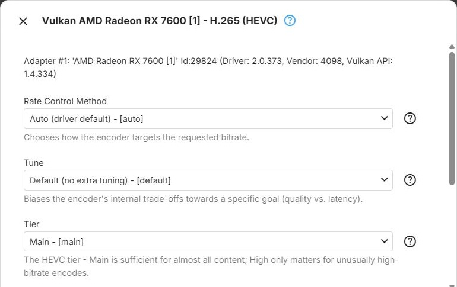

Vulkan
Vulkan Encoder Parameters
The Vulkan context types - Vulkan (Nvidia), Vulkan (Intel) and Vulkan (AMD) - encode through Vulkan Video, the vendor-neutral video extension of Vulkan. These context types are experimental - see Hardware Acceleration. How the dialog works is described in Encoders.
Only the HEVC encoder has parameters. The H.264 encoder (h264_vulkan) and the AV1 encoder (av1_vulkan)
have none, and their settings button is disabled.
HEVC

The hevc_vulkan encoder for HEVC, offered by the Vulkan (Nvidia), Vulkan
(Intel) and Vulkan (AMD) context types.
Rate Control Method - how the encoder reaches the bitrate Emby requests (ffmpeg rc_mode). With every
choice, the requested bitrate is passed as the target and maximum rate, with a buffer of twice the
bitrate. Default: Auto (driver default).
- Auto (driver default) - lets the driver choose its default behaviour. The recommended starting point
- Driver-Specific - uses the GPU driver's own built-in rate control instead of one of the standard modes below
- Constant QP - encodes every frame with the same fixed quantization parameter, using the encoder's default QP value: predictable per-frame quality, unpredictable size
- Constant Bitrate (CBR) - holds the bitrate as close to constant as possible, regardless of scene complexity (CBR). Useful for strict bandwidth limits, at the cost of quality consistency across scenes
- Variable Bitrate (VBR) - targets an average bitrate and lets it vary with scene complexity (VBR). Generally better quality for the same amount of data, with a less predictable size
Tune - biases the encoder's internal trade-offs towards quality or latency (ffmpeg tune). Default:
Default (no extra tuning).
- Default (no extra tuning) - no tuning beyond the other settings. A safe baseline if unsure
- High Quality - the best quality achievable at the chosen settings and bitrate. Suited to on-demand transcoding
- Low Latency - reduces encoding latency at some cost in quality and efficiency, for interactive or near-real-time streaming
- Ultra Low Latency - reduces latency further, with lower quality and efficiency than Low Latency
- Lossless - mathematically lossless output instead of a bitrate and quality trade-off. Produces very large streams; not suited to streaming
Tier - the HEVC tier, which sets the maximum bitrate allowed at
the encoding level in use (ffmpeg tier). Main is sufficient for almost all content. Default: Main.
- Main - the standard tier, sufficient for the vast majority of content and bitrates
- High - allows a higher maximum bitrate at a given level. Only relevant for unusually high bitrates; most playback devices support the Main tier only
Encoding Profile Limit - the highest HEVC profile the encoder may use; empty (the default) means no limit - see Encoding Profile Limit. Offers those of Main Profile and Main 10 Profile that the driver reports.